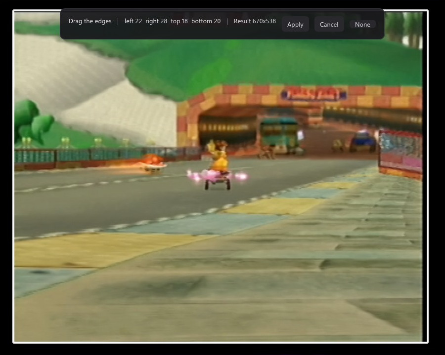
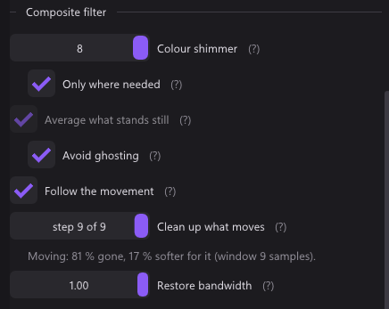
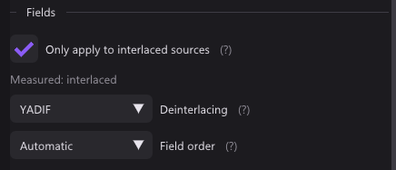

qBlank
Play any console through your capture card. A lightweight, low-latency viewer and recorder for Windows.
One file, about 2 MB. No installer, nothing written to the registry.
Play any console through your capture card. A lightweight, low-latency viewer and recorder for Windows.
One file, about 2 MB. No installer, nothing written to the registry.

No queue, no clock, no wait for VSync. What qBlank adds on top of the card itself is about a millisecond, and the overlay shows it.
Frames are copied into a triple buffer and the filter returns at once. Anything arriving faster than it can be shown is dropped, never buffered, so delay cannot accumulate.
The DirectShow graph runs without a reference clock, so nothing is held back waiting for a presentation time.
A flip-model swap chain with one frame of queue and VSync off by default — the single biggest lever there is.
YUY2, UYVY, NV12, planar 4:2:0, RGB and P010 are unpacked in a pixel shader. Nothing touches the CPU between arrival and drawing.
The overlay times the stretch qBlank is answerable for: from a frame arriving to the present that hands it over, with upload, deinterlacing, filters and scaling inside. What the card does before and the screen after is not folded in.
For any DirectShow device: HDMI and analogue cards, USB dongles, webcams.
H.264, H.265 or AV1 through NVENC, Quick Sync, AMF, x264 or x265. The audio is the master clock, so the output is constant frame rate and does not drift — measured at 1 ms over 15 seconds. The free space on the drive is shown as the recording time it is worth, and a recording stops itself before the drive fills up.
Rate control, preset, tuning, look-ahead, adaptive quantisation and multipass, under one set of names translated into each vendor's own.
The card's own audio or any Windows recording device, out through WASAPI, with clock drift corrected on the fly. A microphone can go on a track of its own in the recording, and is never played back.
PNG or JPEG at source resolution through Windows Imaging Component, so no ffmpeg is needed. JPEG XR keeps the HDR range and needs none either; AVIF does. A switch grabs the finished window instead, interface and all, and Ctrl+F10 puts the shot on the clipboard rather than on disk.
Offer the picture to OBS, Discord or a browser at the source's own resolution and frame rate — and to anything that cannot take that, at whatever it asks for instead.
PQ and HLG are decoded to linear light, tone mapped with BT.2390 for an ordinary screen or passed through as scRGB for an HDR one.
Device, input, capture format and every picture and audio setting, one per source, on Ctrl+1 to Ctrl+9 — or on none at all: a profile can name the video standard that means it, and the standard the search settles on then picks the profile.
Every setting takes effect on the next frame, so it is judged on the picture rather than from memory. Where a value is easier to see than to type, it is set on the picture itself.


On its own Direct3D device, so it can sit on a second monitor while the picture runs on the first. Controls that cannot apply to the source are absent rather than greyed out.
Ctrl+F finds any setting, through typos and the names other programs use. A right click puts a slider back to its default.
Full or limited is read off the picture rather than inferred from the pixel format, with the numbers behind the verdict on show. F6 measures again, for the one thing that changes without touching the format: an option in the card's own driver.
Shift+F12 shows the signal as it arrives, with deinterlacing, crop and aspect kept — the quick answer to whether a filter is the problem.
An analogue source needs more than a viewer usually offers. qBlank finds the video standard, deinterlaces, cleans up composite and can put the scanlines back — all in real time.
Composite carries colour and brightness on one wire and they leak into each other. Most viewers leave that alone. qBlank removes it in real time, and the numbers behind every setting were measured on real hardware rather than guessed.

| Half | What it does | What it costs |
|---|---|---|
| Four-frame average | Cancels dot crawl wherever the picture stands still. Four, because the subcarrier walks a four-frame cycle — measured 1.91, 2.62, 1.90 and 0.78 at lags of one to four. | Nothing at all. |
| Synchronous demodulator | Reconstructs the subcarrier out of the brightness and subtracts it, so moving content is covered too. Removes 81 % of the pattern at a window of nine samples. | 17 % of horizontal sharpness. |


Whether a source is interlaced is measured from the picture, not read from the media type — a media type is entitled to say so and frequently does not.


An analogue decoder has to be told whether it is looking at PAL, NTSC or SECAM, and getting it wrong costs you either the picture or the colour. Leave it on automatic and qBlank finds it — and keeps finding it, so switching a console between 50 and 60 Hz needs nothing from you.
All a decoder reports is whether it has locked, and that is about line frequency. PAL 60, NTSC M, PAL M and NTSC 4.43 all lock on the same 525 lines, and it reports the wrong one just as confidently.
The candidates are compared on what they actually produce: how much colour there is, and whether black stays black. Decoding PAL as SECAM does not give a grey picture — it gives a bright red one where black should be, and that is what the second measurement catches.
Measured against a GameCube at 60 Hz, starting from a deliberately wrong standard: 1.7 to 2.4 seconds. The list is walked quickly first and patiently only if that finds nothing, so a console switched between 50 and 60 Hz is over in a fraction of the time.
PAL 60 and NTSC 4.43 carry colour at the same frequency and differ only in that PAL reverses the phase every other line. The wrong one of the pair does not decode nonsense — it decodes less, so counting colour rewards it for the omission. qBlank measures the reversal itself instead, and drops the standard that fights the signal.
F7 runs both stages again on the picture in front of you — the one case the automatic search cannot see, because colour that is wrong is still colour. It takes under two seconds, and it tells you what it found either way.
A card advertises the same format list whatever is plugged into it. Once the standard is known the raster is too, so the resolution offered by default matches what really arrives instead of upscaling a console to 1080p inside the card — and the rate list gains the signal's rate: 50 under PAL, 59.94 under NTSC, a flat 60 under PAL 60.
A comparison needs a picture to compare on. If the scene moves during the round, or the screen is essentially black, the round is thrown out rather than believed — a wrong answer held confidently is worse than waiting a moment.
240p artwork was drawn for a display that had gaps between its lines and a coloured mask over its phosphors. On a flat panel the absence of both is itself a distortion. Off by default, and display only — a recording takes the picture from upstream of this pass.

A card that starts at 720p, or a dongle with a scaler of its own, hands over 1080 lines from a console that drew 480 — and nothing in the picture says reliably which number is real. Source lines is where you say it: 240 and 288 for a 60 or 50 Hz SNES, Mega Drive, PS1 or N64, 480 and 576 for a GameCube, PS2, Dreamcast or Wii. PAL 60 is the odd one — NTSC's raster at PAL's colour.
The declared count becomes the number of output rows per real picture line, which is where a scaled capture stops being a problem: 1080 lines from a 480-line console is 2.25 rows each, and the scanlines sit on the lines the console actually drew rather than on the ones the scaler invented.


Scanline() and Mask() over a still, rather than photographed off the screen: the effects are display-only by design, so a screenshot taken inside qBlank does not contain them.Scenes, overlays, compositing and streaming are not here and are not planned. For those, use OBS — and note that a card grants its capture pin to one process at a time, so the two cannot hold the same card at once.
| Requirement | |
|---|---|
| Windows 10 or later | the virtual camera installs with one UAC prompt |
| A DirectShow capture device | almost every card, including USB ones |
| ffmpeg | for recording and AVIF screenshots, fetched by a button |